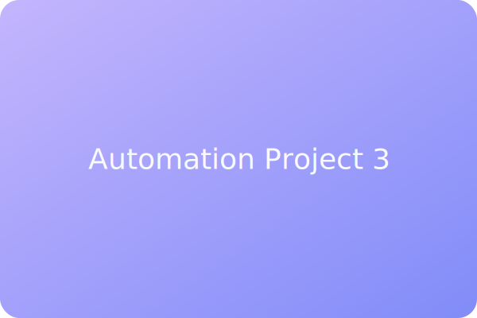

AI-Powered Lead Assistant
An AI assistant orchestrated through Make.com to nurture leads, schedule meetings, and capture analytics.
Highlights
- Used OpenAI integrations to qualify leads using natural-language prompts.
- Connected Google Calendar, Slack, and CRM for instant scheduling updates.
- Delivered live performance dashboards inside Google Sheets.
Impact
The assistant increased conversion rates by keeping prospects engaged automatically while providing the sales team full visibility.